“Zeer betrouwbaar en goede persoonlijke zorg! Absolute aanrader.”
Fysiotherapie in Haarlem
Beweeg beter.
Beweeg beter.
Voel u beter.
Leef beter.
Persoonlijke fysiotherapie in Haarlem voor herstel, beweging en duurzame gezondheid. Wij combineren evidence-based zorg met een actieve aanpak voor langdurig herstel en vitaliteit.
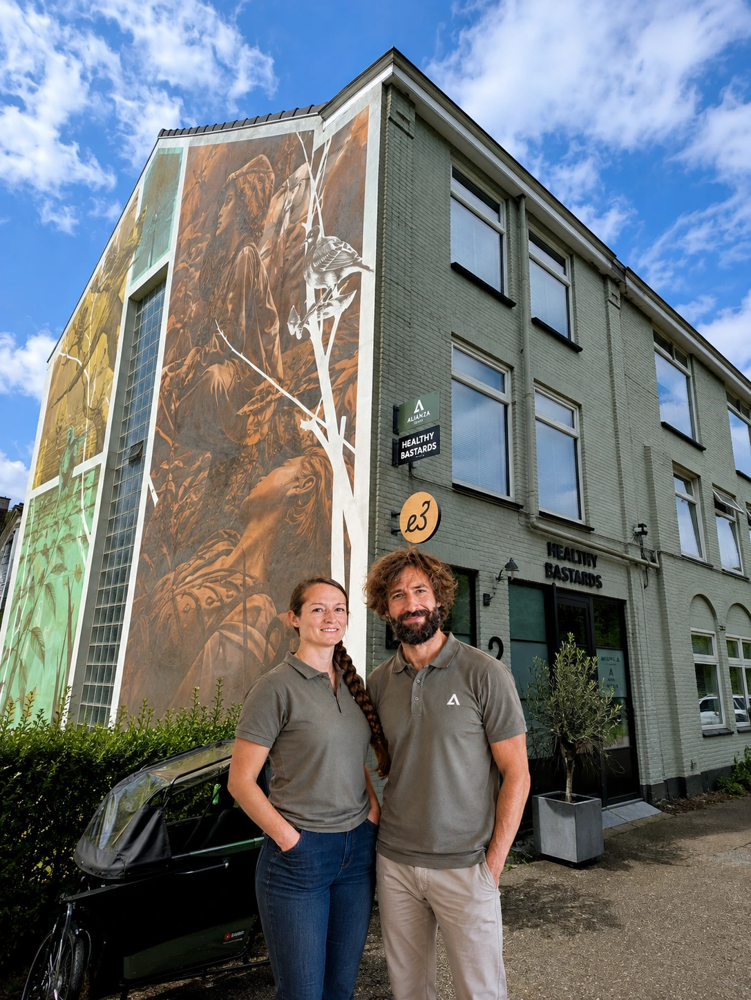
Educatie
Wij geven u inzicht in de werking van uw lichaam.
Herstel
Wij ondersteunen uw herstel met persoonlijke zorg.
Prestatie
Verbeter uw kracht, mobiliteit en sportprestaties.
Welzijn
Gericht op langdurige gezondheid en vitaliteit.
Welkom bij
Alianza Fysio
Alianza Fysio is een moderne fysiotherapiepraktijk in Haarlem. Wij helpen u bij pijnklachten, blessures, revalidatie en het verbeteren van uw bewegingsvrijheid.
Met onze persoonlijke zorg en evidence-based aanpak begeleiden we u bij uw herstel en stimuleren we actief bewegen om uw doelen te bereiken. We stemmen de behandeling volledig af op uw specifieke situatie.
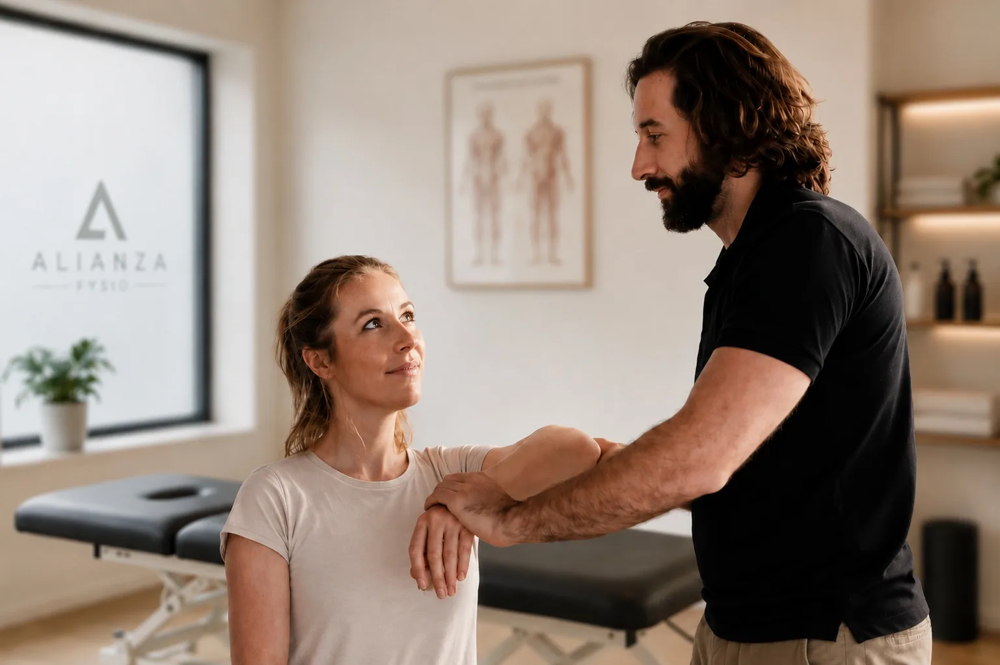
Persoonlijke aanpak
Persoonlijke zorg en behandelingen afgestemd op uw unieke behoeften en doelen.
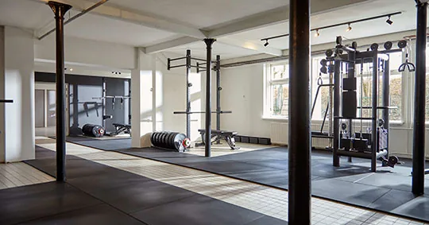
Geïntegreerde omgeving
Gevestigd in de gym van Healthy Bastards voor een optimale revalidatie en training.
Bezoekadres
Zijlweg Zijweg 2
2015 BK Haarlem
(gevestigd in Healthy Bastards)
Telefoon
AGB-praktijkcode: 04900301
KvK-nummer: 42007289
Vestigingsnr: 000065108051
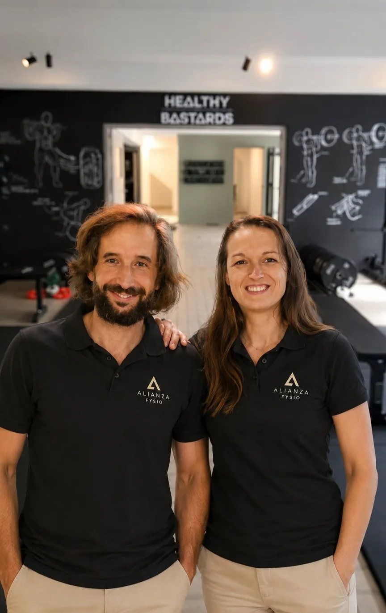
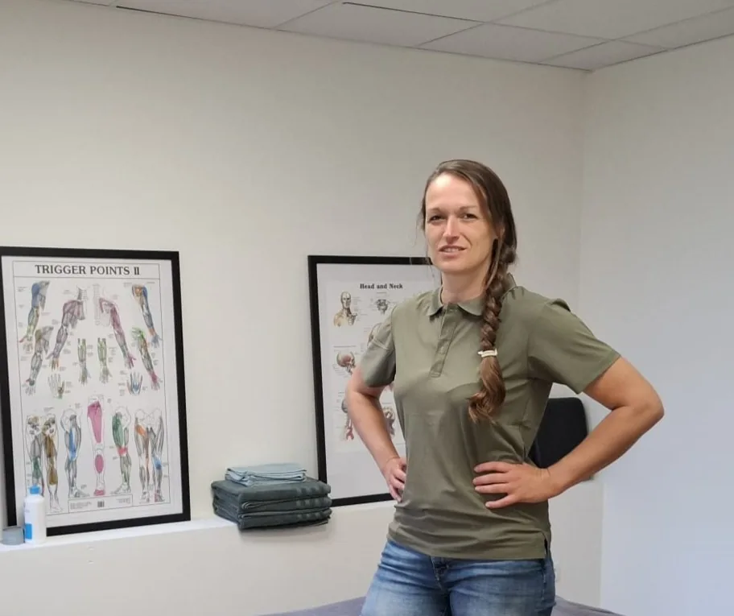
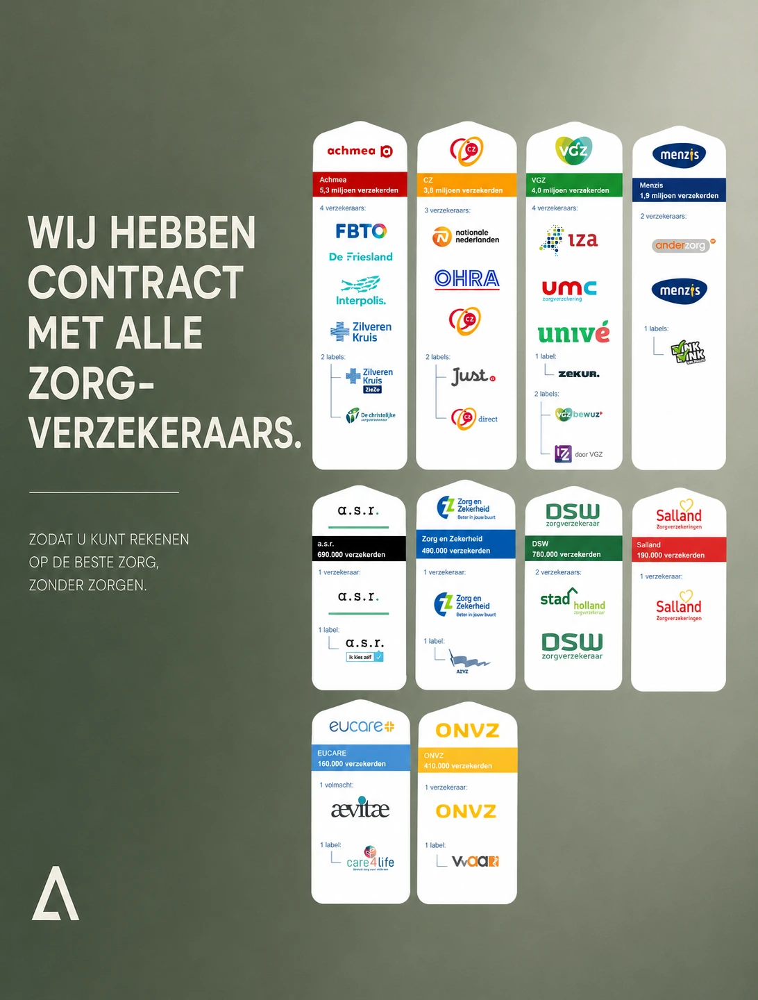
Ontmoet ons team
Onze Specialisten
Francisco Javier Alonso Nicolas
Fysiotherapeut & EigenaarBIG-nummer: 29921979604 | AGB-code: 04244042
Francisco is een ervaren en gedreven fysiotherapeut. Hij is gespecialiseerd in het behandelen van sportblessures, dry needling en kaakklachten (TMJ-disfunctie).
Hij heeft brede ervaring in het behandelen van nek- en rugklachten, evenals complexe post-operatieve revalidatietrajecten (zoals voorste kruisband-, heup- en knie-revalidatie). Francisco richt zich op het herstellen van een optimaal bewegingspatroon voor duurzaam resultaat.
Sportblessures
Dry Needling
Kaakklachten (TMJ)
Revalidatie na operatie
Nek- & rugklachten
Hands-on behandeling
Diagnostiek & Assessment
Maartje Wouda
Fysiotherapeut & EigenaarBIG-nummer: 69923653104 | AGB-code: 04245832
Maartje is een fysiotherapeute die uitblinkt in hands-on behandelingen en grondig diagnostisch onderzoek. Haar persoonlijke benadering stelt de patiënt centraal in elk revalidatieproces.
Zij is gespecialiseerd in sportgerelateerde blessures en revalidatietraining. Daarnaast heeft zij ruime ervaring met de behandeling en begeleiding van chronische aandoeningen, waarbij het verbeteren van mobiliteit, functioneel herstel en kwaliteit van leven vooropstaan.
Hands-on behandeling
Diagnostiek & Assessment
Sportblessures
Chronische aandoeningen
Mobiliteit & Functioneel herstel
Dry needling
Mulligan Concept
Waarmee kunnen wij u helpen?
Klachten die wij behandelen
Begin bij uw klacht. Wij onderzoeken welke factoren een rol spelen en kiezen samen een passende aanpak.
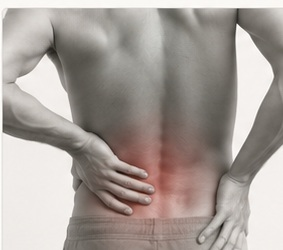
Uitgebreide patiëntengids
Rugpijn
Lees over mogelijke oorzaken, ons onderzoek, behandeling, herstel en wanneer een MRI zinvol kan zijn.
Lees over rugpijn →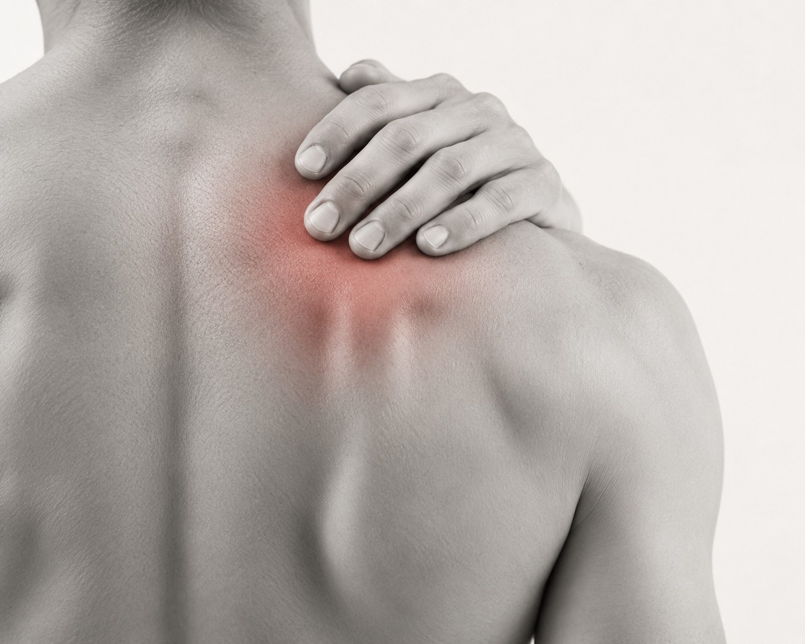
Behandeling
Spierklachten en triggerpoints
Ontdek wanneer dry needling een relevante aanvulling binnen uw behandelplan kan zijn.
Lees over dry needling →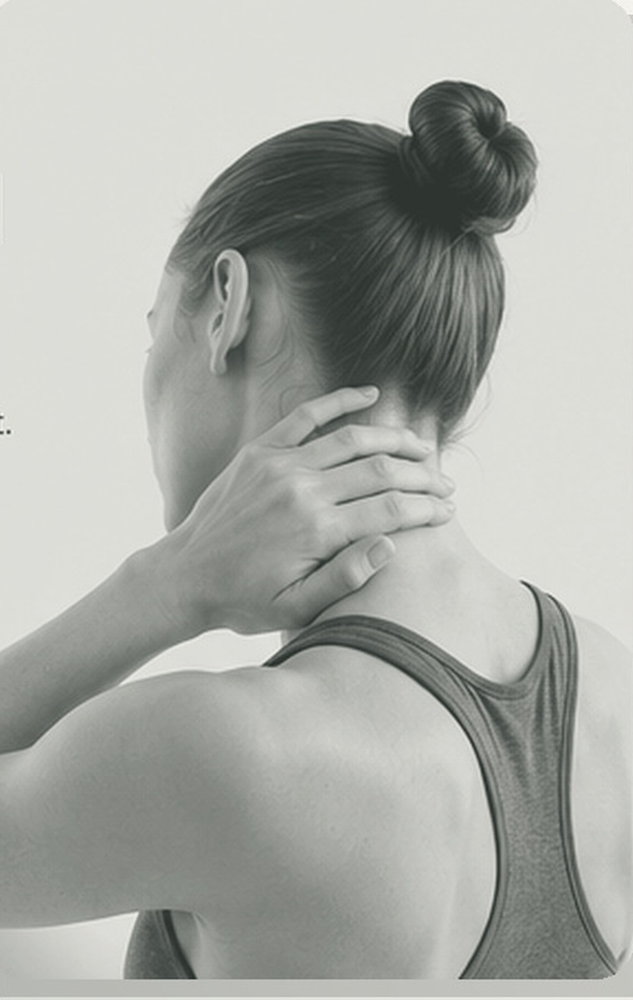
Nieuwe patiëntengids
Nekpijn
Lees over stijve nek, hoofdpijn, schouder- of armklachten, ons onderzoek en een persoonlijk herstelplan.
Lees over nekpijn →
Uitgebreide patiëntengids
Knieklachten
Van peesklachten en knieschijfpijn tot meniscus, banden en artrose.
Lees over knieklachten →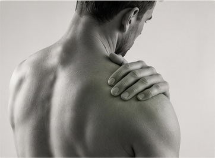
Nieuwe patiëntengids
Schouderklachten
Van rotator cuff en peesklachten tot frozen shoulder, instabiliteit en artrose.
Lees over schouderklachten →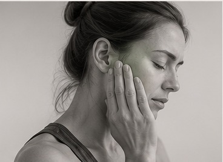
Nieuwe patiëntengids
Kaakklachten / TMJ
Lees over kaakpijn, klikken, klemmen, hoofdpijn, beperkte mondopening en onze persoonlijke aanpak.
Lees over kaakklachten →
Behandelingen
Therapie. Bewegen. Herstel.
We bieden gerichte en evidence-based fysiotherapeutische zorg, specifiek afgestemd op uw lichaam, klachten en levensstijl.
01
Algemene fysiotherapie
Behandeling van uiteenlopende klachten aan het bewegingsapparaat om uw dagelijks functioneren te verbeteren en fysieke pijn effectief te verminderen.
- Gewrichtsmobilisatie
- Spierbehandelingen
- Houdingsadvies & coaching
02
Sportblessures
Gericht herstel voor sporters van elk niveau. We analyseren de oorzaak en begeleiden u veilig en effectief terug naar uw gewenste sportieve prestaties.
- Hardloop- & bewegingsanalyse
- Sportspecifieke training
- Blessurepreventie advies
03
Revalidatie na operatie
Evidence-based begeleiding na orthopedische ingrepen zoals een voorste kruisbandreconstructie (ACL), knieprothese of heupprothese.
- Kruisband- & meniscustraject
- Knie- & heupprothese herstel
- Krachts- & stabiliteitsmetingen
04
Nek-, rug- en schouderklachten
Behandeling van acute of chronische pijnklachten in de wervelkolom en de schouderregio, onder meer door mobilisatie en gerichte training.
- Houdingscorrectie
- Wervelkolom mobilisaties
- Belastbaarheid vergroten
05
Knie- en heupklachten
Therapie bij artrose, meniscusletsels, peesklachten of slijtage. We versterken de spieren rondom het gewricht voor pijnvrij bewegen.
- Artrose management
- Belastingpatronen corrigeren
- Spierversterkende oefeningen
06
Dry needling
Gerichte behandeling van relevante spierknopen (triggerpoints) met een dunne, steriele naald. Altijd na een zorgvuldig onderzoek van spieren, gewrichten en zenuwen.
- Triggerpoints behandelen
- Spierspanning verminderen
- Beweging en functie verbeteren
07
Kaakklachten / TMJ
Gespecialiseerde behandeling van kauwspieren, kaakgewrichten en gerelateerde klachten zoals tandenknarsen, kaakklemmen of spanningshoofdpijn.
- Kaakgewricht mobilisatie
- Ontspanning kauwspieren
- Gerichte thuisoefeningen
08
Oefentherapie en training
Actieve revalidatie en functionele krachttraining in de revalidatieruimte. We bouwen uw fysieke belastbaarheid op ter voorkoming van herhaalde klachten.
- Functionele krachttraining
- Stabiliteit & mobiliteit
- Voorkomen van recidief
Tarieven 2026
Kosten & Behandelingen
Wij hebben contracten met alle Nederlandse zorgverzekeraars. Uw behandeling wordt, afhankelijk van uw polis, geheel of gedeeltelijk vergoed.
| Omschrijving behandeling | Code | Tarief |
|---|---|---|
| Screening, intake en onderzoek na screening | 1864 | € 60,00 |
| Intake en onderzoek na verwijzing | 1870 | € 60,00 |
| Zitting fysiotherapie | 1000 | € 50,00 |
| Zitting manuele therapie | 1200 | € 60,00 |
| Zitting oedeemtherapie | 1500 | € 60,00 |
| Intake en onderzoek aan huis | 1871 | € 99,00 |
| Zitting fysiotherapie aan huis | 1001 | € 75,00 |
| Zitting manuele therapie aan huis | 1201 | € 87,50 |
| Niet nagekomen afspraak of minder dan 24 uur vooraf afgezegd | — | € 39,00 |
Let op: Onze tarieven gelden voor niet-verzekerde zorg, behandelingen buiten uw aanvullende verzekering of wanneer vergoeding niet van toepassing is.
Vergoedingen
Vergoeding bij een chronische indicatie
Voor sommige aandoeningen wordt fysiotherapie vergoed vanuit de basisverzekering. Dit geldt alleen wanneer uw aandoening voorkomt op de officiële lijst van chronische aandoeningen van de overheid.
Houd er rekening mee dat de zorgverzekeraar strikte regels hanteert rondom chronische indicaties en de start van de vergoedingen uit het basispakket.
Belangrijk om te weten:
- Geen automatische dekking: Niet iedere langdurige of 'chronische' klacht valt onder deze wettelijke regeling.
- Eerste 20 behandelingen: Deze worden in principe niet vergoed vanuit de basisverzekering.
- Aanvullende verzekering: Deze eerste 20 behandelingen kunnen eventueel wel (geheel of gedeeltelijk) worden vergoed vanuit uw aanvullende zorgverzekering.
- Vanaf de 21e behandeling: Vanaf deze zitting wordt fysiotherapie in de meeste gevallen volledig vergoed vanuit de basisverzekering.
- Eigen risico: Op de vergoedingen die vanuit de basisverzekering worden gedaan, is het wettelijke eigen risico van toepassing.
Twijfelt u of uw aandoening in aanmerking komt voor vergoeding? Neem gerust contact met ons op. Wij helpen u graag bij het beoordelen van uw persoonlijke situatie.
Wanneer kunt u bij ons terecht
Openingstijden
Maandag t/m vrijdag: 07:30 – 21:00
Zaterdag: 08:00 – 12:30
Zondag: Gesloten
Neem contact op
Start uw herstel
Neem contact met ons op om een afspraak te maken of uw vragen te stellen. Wij reageren doorgaans binnen 24 uur.
Praktijkgegevens
AlianzaFysio Fysiotherapie
Bezoekadres: Zijlweg Zijweg 2, 2015 BK Haarlem (Healthy Bastards)
E-mail: info@alianzafysio.com
Telefoon: +31 643 054 477
KvK-nummer: 42007289 | Vestigingsnr: 000065108051
AGB-praktijkcode: 04900301
Maak een afspraak
Vul het formulier in en wij nemen spoedig contact met u op om uw zitting te plannen.
Ervaringen van patiënten